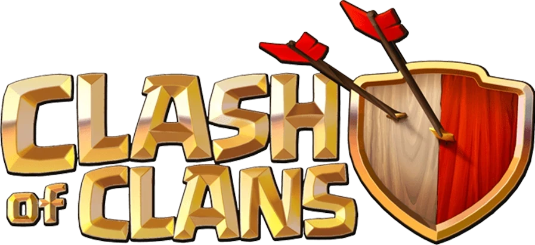

Clash of Clans: Uma Jornada de Estratégia e Combate
Clash of Clans é um jogo mobile de estratégia em tempo real que conquistou milhões de jogadores ao redor do mundo. No jogo, você assume o papel de um líder que constrói e gerencia sua própria vila, treinando tropas e defendendo-a de invasores.
O objetivo principal é construir uma vila forte e poderosa, capaz de resistir a ataques e conquistar outras vilas. Para isso, você precisa gerenciar seus recursos, ouro e elixir, com sabedoria, investindo em edifícios, tropas e defesas.
A personalização é um dos pontos fortes do jogo. Você pode escolher o layout de sua vila, personalizar suas tropas e até mesmo criar seu próprio clã para se juntar a outros jogadores e participar de guerras épicas.
O sistema de combate é estratégico e emocionante. Você precisa planejar seus ataques com cuidado, escolhendo as tropas certas e utilizando táticas inteligentes para superar as defesas inimigas.Mas não se esqueça da defesa! Você precisa construir torres, armadilhas e muros para proteger sua vila dos invasores.
Clash of Clans oferece uma experiência completa e viciante, com:
Construção e gerenciamento de vila: Construa edifícios, defesas e tropas, gerenciando seus recursos e melhorando suas estruturas.
Combate estratégico: Planeje seus ataques, escolha as tropas certas e utilize táticas inteligentes para vencer.
Sistema de clãs: Junte-se a outros jogadores, participe de guerras e compartilhe recursos.
Eventos e desafios: Participe de eventos especiais e desafios para ganhar recompensas e testar suas habilidades.
Gostaria de compartilhar alguns vídeos com você :